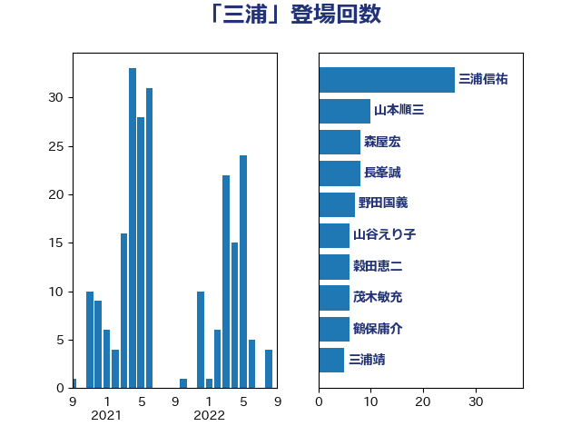

単語「三浦」

| 三浦信祐 | 公明党 | 26 回 |
| 山本順三 | 自由民主党 | 10 回 |
| 森屋宏 | 自由民主党 | 8 回 |
| 長峯誠 | 自由民主党 | 8 回 |
| 野田国義 | 立憲民主党 | 7 回 |
| 山谷えり子 | 自由民主党 | 6 回 |
| 穀田恵二 | 日本共産党 | 6 回 |
| 茂木敏充 | 自由民主党 | 6 回 |
| 鶴保庸介 | 自由民主党 | 6 回 |
| 三浦靖 | 自由民主党 | 5 回 |
| 山田宏 | 自由民主党 | 5 回 |
| 末松信介 | 自由民主党 | 5 回 |
| 石橋通宏 | 立憲民主党 | 5 回 |
| 足立康史 | 日本維新の会 | 5 回 |
| 野村哲郎 | 自由民主党 | 5 回 |
| 佐藤信秋 | 自由民主党 | 4 回 |
| 長浜博行 | 無所属 | 4 回 |
| 山東昭子 | 自由民主党 | 3 回 |
| 浅田均 | 日本維新の会 | 3 回 |
| 石田真敏 | 自由民主党 | 3 回 |
| 佐々木さやか | 公明党 | 2 回 |
| 古屋範子 | 公明党 | 2 回 |
| 古川俊治 | 自由民主党 | 2 回 |
| 吉田忠智 | 立憲民主党 | 2 回 |
| 塩川鉄也 | 日本共産党 | 2 回 |
| 大塚耕平 | 国民民主党 | 2 回 |
| 宮沢洋一 | 自由民主党 | 2 回 |
| 小山展弘 | 立憲民主党 | 2 回 |
| 市村浩一郎 | 日本維新の会 | 2 回 |
| 平口洋 | 自由民主党 | 2 回 |
| 平木大作 | 公明党 | 2 回 |
| 斎藤嘉隆 | 立憲民主党 | 2 回 |
| 木原誠二 | 自由民主党 | 2 回 |
| 杉尾秀哉 | 立憲民主党 | 2 回 |
| 東徹 | 日本維新の会 | 2 回 |
| 松村祥史 | 自由民主党 | 2 回 |
| 舞立昇治 | 自由民主党 | 2 回 |
| 赤羽一嘉 | 公明党 | 2 回 |
| 長谷川岳 | 自由民主党 | 2 回 |
| 青木一彦 | 自由民主党 | 2 回 |
| あべ俊子 | 自由民主党 | 1 回 |
| 佐藤正久 | 自由民主党 | 1 回 |
| 安江伸夫 | 公明党 | 1 回 |
| 宮本徹 | 日本共産党 | 1 回 |
| 小林鷹之 | 自由民主党 | 1 回 |
| 小泉進次郎 | 自由民主党 | 1 回 |
| 山口俊一 | 自由民主党 | 1 回 |
| 岸信夫 | 自由民主党 | 1 回 |
| 後藤祐一 | 立憲民主党 | 1 回 |
| 杉久武 | 公明党 | 1 回 |
| 松沢成文 | 日本維新の会 | 1 回 |
| 横山信一 | 公明党 | 1 回 |
| 橋本岳 | 自由民主党 | 1 回 |
| 浮島智子 | 公明党 | 1 回 |
| 渡辺猛之 | 自由民主党 | 1 回 |
| 熊田裕通 | 自由民主党 | 1 回 |
| 熊野正士 | 公明党 | 1 回 |
| 牧原秀樹 | 自由民主党 | 1 回 |
| 細田博之 | 自由民主党 | 1 回 |
| 西岡秀子 | 国民民主党 | 1 回 |
| 西村康稔 | 自由民主党 | 1 回 |
| 青木愛 | 立憲民主党 | 1 回 |
| 馬場成志 | 自由民主党 | 1 回 |
| 高橋光男 | 公明党 | 1 回 |
| 鬼木誠 | 立憲民主党 | 1 回 |